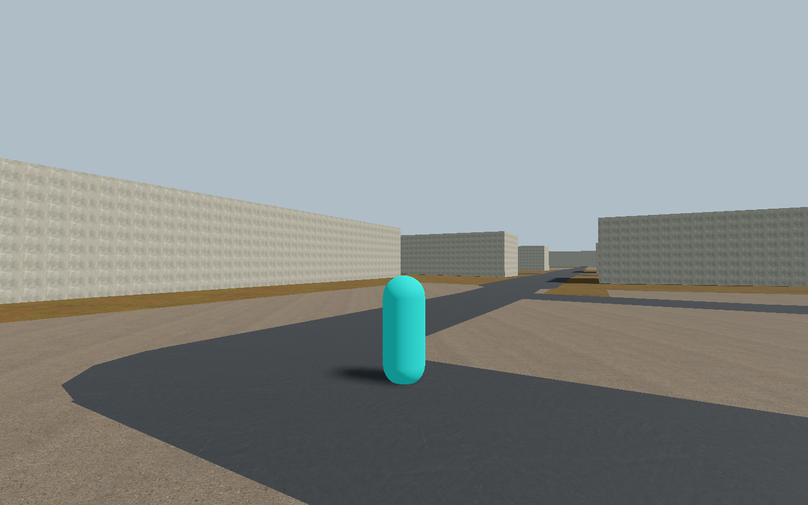
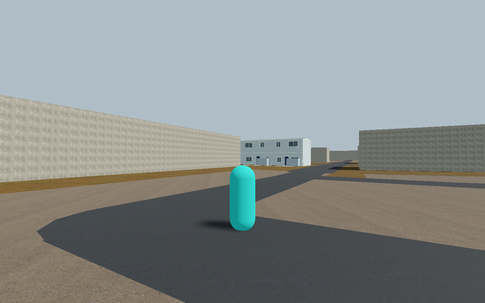
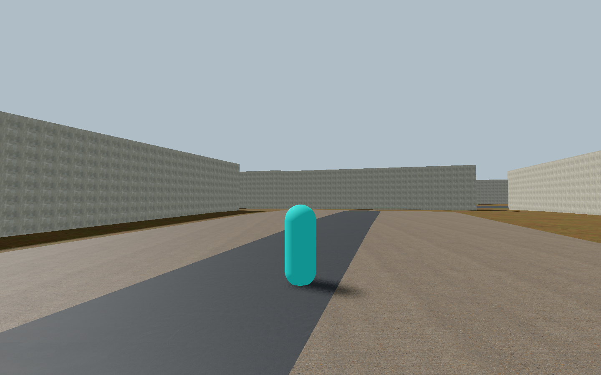
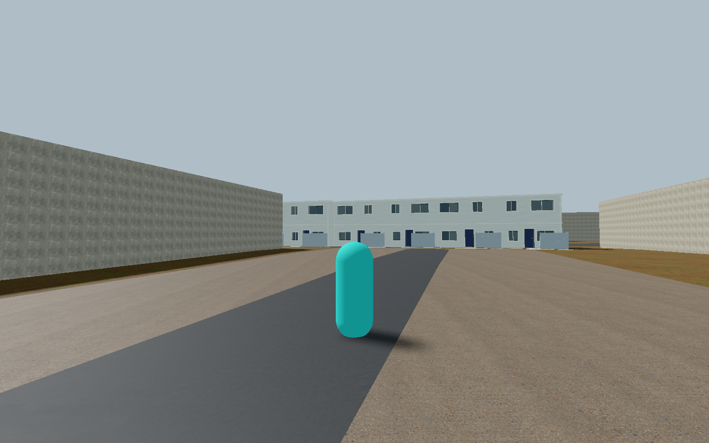
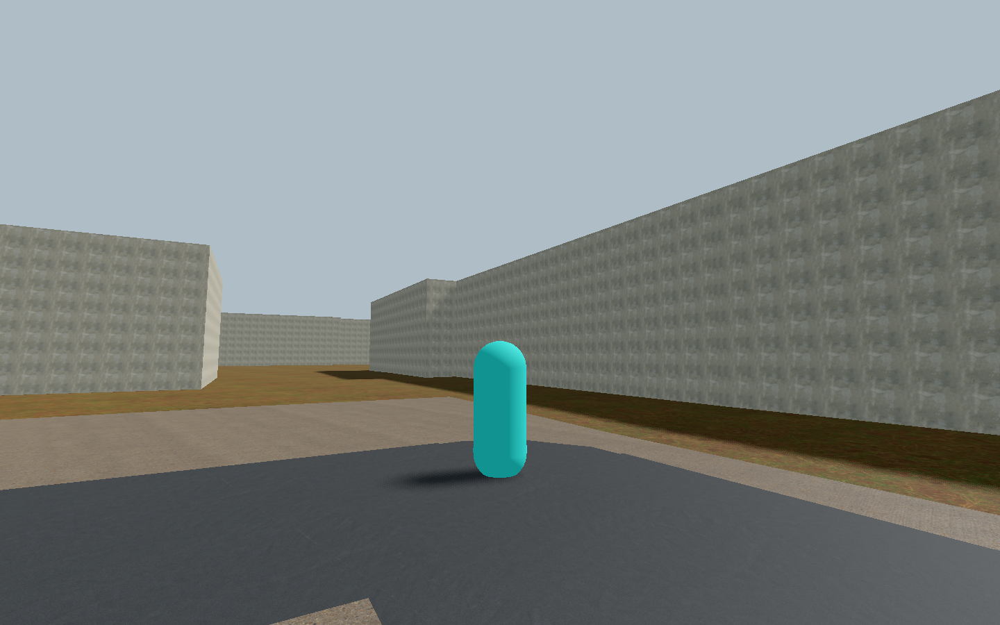
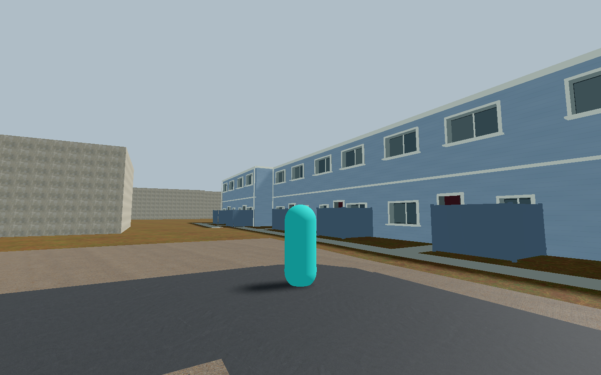
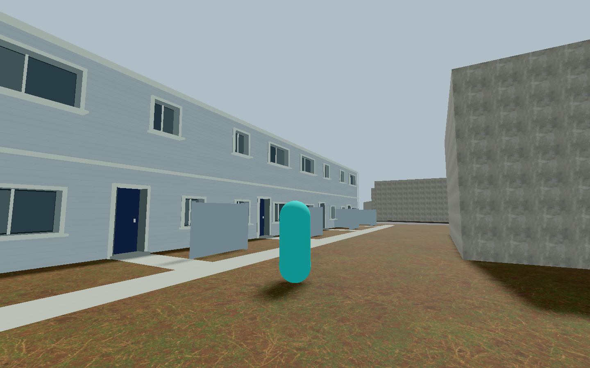
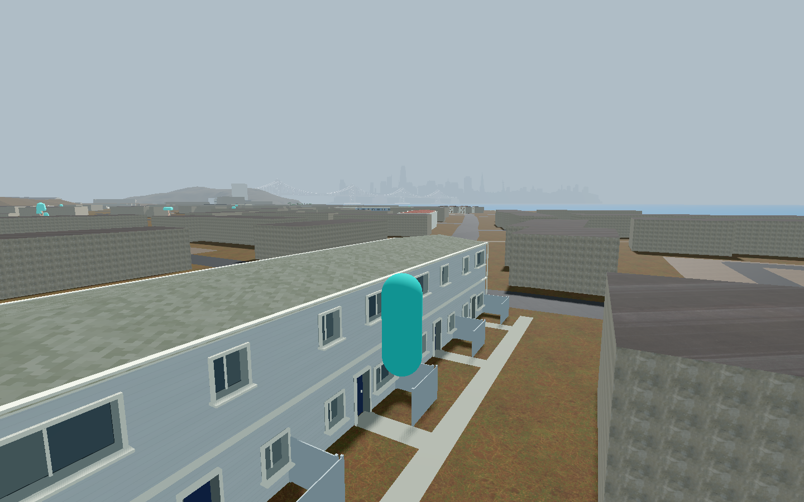

Three more unattached housing drafts
12 total · production remains33 family /43 recognized. Scope and provenance
1149 Ozbourn · w96665909
A · source
B · initial candidate
1116 Hutchins · w96665919
A · source
B · initial candidate
1113 Keppler · w96665921
A · source
B · initial candidate
1149 · final useful installed evidence
Closer installed frontage
Stock roof-oblique view